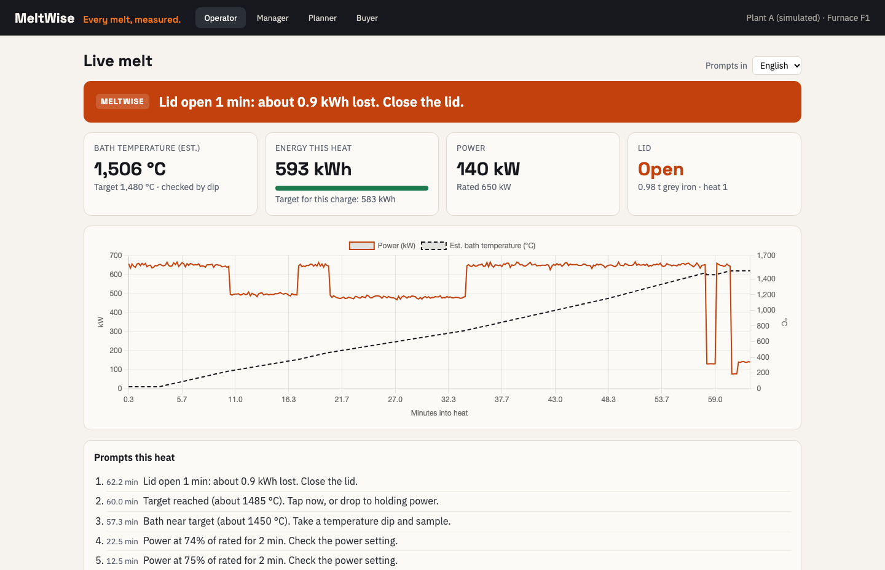
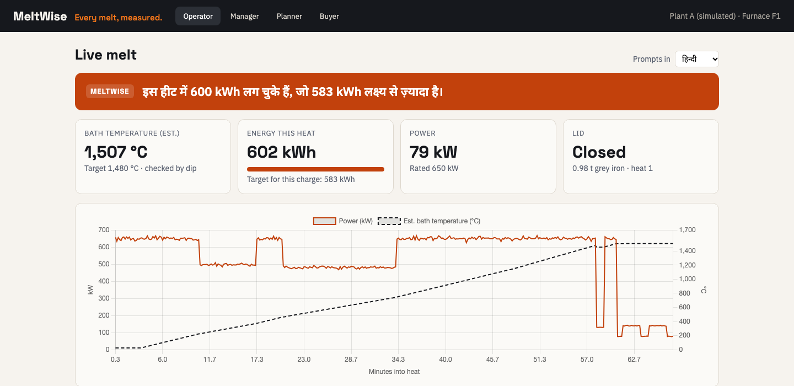

The operator's screen


Live from the simulated meter, through the gateway. Six prompt types: under-power, dip now, tap now, lid open, holding, over budget, each with the kWh at stake. English, हिन्दी, தமிழ்.
Hindi and Tamil text are first drafts, to be checked with operators in the pilot.
MeltWise · Yuva Yodha 2026 · Phase 2 prototype
6